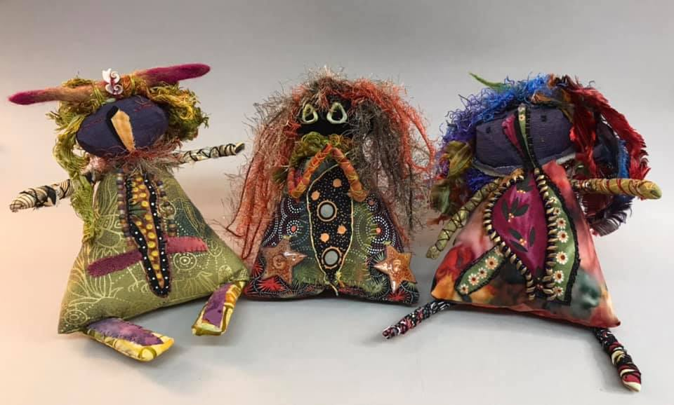

My figurative pieces are heavily influenced by my childhood in Kenya, my love of African fabrics and the aesthetics of the raw.
I don’t design or plan, rather a figure is often influenced by shapes that I connect with on a instinctive level. This could be ceramics, baskets, gourds, children’s drawings, folk and indigenous art.
Working with two different techniques allows for either hanging figures or free standing figures. Both techniques can range in scale and size. From 16 inches tall to 5 ft.
My process starts with plain cloth, usually black. Edges are left raw as I instinctively pull fabrics from a pile, and stitch them on to the base working from the outside to the centre until the base is completely covered. The visible stitching is both a method of construction and decoration. Lastly I embellish to enhance and complete the figure.
I incorporate tearing, wrapping, raw edges visible stitching and embroidery, beads, buttons, wool and other fabrics as an exploration and development of personal aesthetics, narrative and identity.
Soft Sculptures -Helen Layfield
My 7 individual workshops workshops allow for participants to pick and choose from a diverse range of techniques and processes. If all 7 workshops are completed you will have a full rage of skills allowing you to explore your individual creative voice and personal identity.
All courses are suitable for complete beginners through to professional artists looking for a new way to express themselves. They are dyslexia and disability friendly.
MATERIALS LIST FOR ALL WORKSHOPS:
Fabrics – Preferably not new unless you are working from your stash.
Threads – You can use anything from machine threads through to embroidery floss and thin crochet yarn. For visible stitching thicker threads are useful. Again please don’t buy new, charity shops, thrift stores, goodwill will all have a lot of choice.
Needles – They don’t have to be special, I use household needles. Just look at the size of the eye, make sure that your threads fist through easily. My personal preference is longer needles as they have many uses – 1.5 to 2 inches.
Scissors – Make sure that they are sharp enough for fabric, if using scraps, then you just need a small pair of scissors.
Pins – Useful but not a necessity, if you have ones that are long with big heads all the better.
Stuffing – Does not have to be bought from a craft store, I personally use the insides of cushions, pillows, comforters and duvets. I do this for 2 reasons, firstly, the figures use a lot more stuffing than you think and secondly I know that manufactures have strict safety standards and the filling in these household items will adhere to fire safety regulations.
Each workshop lasts 3 hours and is £35 per person. The workshop is run online via GOOGLE MEET or ZOOM
Each participant will be emailed a set of slides in PDF format.
The format for each workshop will consist of welcome, followed by slides. Answering of questions followed by a 10 min comfort break, after which we come back to start the making process.
Sets of slides from each workshop can be bought independently if you want to work on your own and cannot attend the workshop £10 for each set.
This course allows for one simple shape to be the basis of your figure. I believe that constraint allows for creativity. By making a figure that has only a front and a back you are forced into thinking about the importance of different elements of the figure.
What is important for you to include and what can be left to the viewers imagination. We will look at shape, scale and personal symbolism. We also look at using textile related materials when making faces and explore tearing of fabric and how it can be used.
I would advise that all participants take this first course as it introduces you to my way of working and is a strong starting point.
WORKSHOP 2 – MULTI PIECE FIGURE
This follow on course allows an exploration of making separate elements of the figure. Head, body , arms and legs can all be added separately. This allows for a greater degree of creativity as you are not limited to making a figure that corresponds to a traditional format.
We will also look at wrapping and how it can be used within figurative work.
WORKSHOP 3 – STANDING FIGURE
The standing figure course begins your exploration of making a freestanding figure in a simple technique that can be adapted in many different ways. We explore two different body shapes and consider different techniques for arms and hands, legs and feet.
WORKSHOP 4 – PYRAMID FIGURE

A unique shape that due to it non traditional figurative form allows for your imagination to really run wild. A chance to make something unique and completely different.
Figures made by Heather Tinkham USA.
WORKSHOP 5 – COIL BASKET FIGURE
The body of this figure is a basket, which you make from recycled materials. Once we have mastered that technique you can explore many different ways to add the other figurative elements.
Figure made by DonNiece K Smith USA
WORKSHOP 6 – FACELESS FIGURE
Artists have used faceless figures for many different different reasons, we explore the importance of facial features and how to create figures with no features.
A workshop that helps you to question the importance and symbolism within a human face.
Figure made by Carolina Berta – Uruguay
WORKSHOP 7 – GOURD FIGURE
A second free standing figure.
The figure is created with a traditionally sculptural method starting in the centre with an armature of stuffing and fabric and building your figure around it.
{kind=link}
{kind=link}
{kind=link}